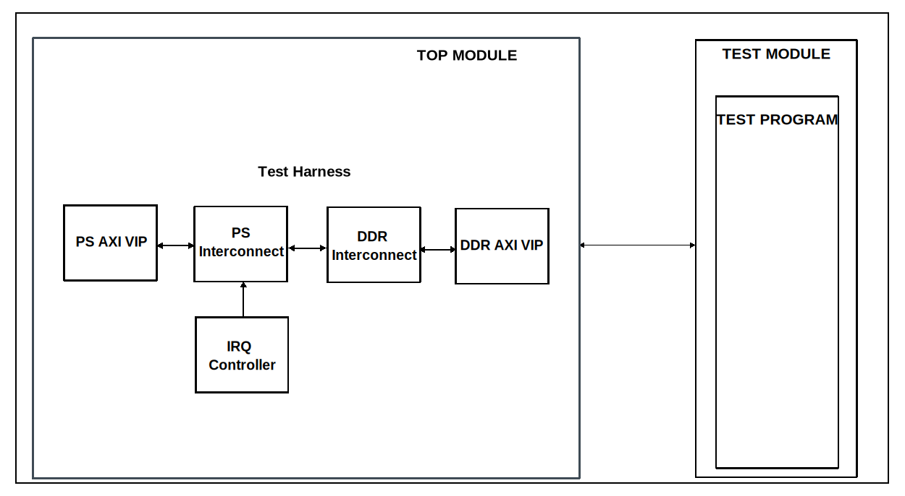

Base
Overview
The purpose of this testbench is to be a reference design for the other testbenches.
Block design
The block design found in this testbench is in many instances referred to as the test harness. It has a simulated Processing System that has an AXI4Lite interface, a DDR memory, which is set to a size of 2GB, and auxiliary IPs and VIPs, such as interconnects, clocks and resets.
Block diagram
{kind=link}
Configuration parameters and modes
This project has no configuration parameters.
Configuration files
The testbench has an empty configuration file included in the file structure which allows the testbench to be built and run by default.
Tests
The following test program file is available:
Test program |
Usage |
|---|---|
test_program |
Creates a basic test stimulus. |
Available configurations & tests combinations
The test program is compatible with the configuration.
CPU/Memory interconnects addresses
Instance |
Address |
|---|---|
axi_intc |
0x4120_0000 |
ddr_axi_vip |
0x8000_0000 |
Interrupts
No interrupt signals are connected to the interrupt controller.
Test stimulus
The test program is only responsible for the environment bringup:
Environment Bringup
The steps of the environment bringup are:
Set logger verbosity
Print the randomization state
Create the environment
Start the environment
Start the clocks
Assert the resets
Stop the environment
Stop the clocks
Building the test bench
The testbench is built upon ADI’s generic HDL reference design framework. ADI does not distribute compiled files of these projects so they must be built from the sources available here and here, with the specified hierarchy described Set up the Testbenches repository. To get the source you must clone the HDL repository, and then build the project as follows:
Linux/Cygwin/WSL
Example 1
Building and simulating the testbench using only the command line.
user@analog:~$
cd testbenches/ip/base
user@analog:~/testbenches/ip/base$
make
Example 2
Building and simulating the testbench using the Vivado GUI. This command will launch Vivado, will run the simulation and display the waveforms.
user@analog:~$
cd testbenches/ip/base
user@analog:~/testbenches/ip/base$
make MODE=gui
The built project can be found in the runs folder, where each configuration
specific build has its own folder named after the configuration file’s name.
Example: if the following command was run for a single configuration in the
clean folder (no runs folder available):
make CFG=cfg1
Then the subfolder under runs name will be:
cfg1
Resources
More information
Support
Analog Devices, Inc. will provide limited online support for anyone using the reference design with ADI components via the EngineerZone FPGA reference designs forum.
It should be noted, that the older the tools’ versions and release branches are, the lower the chances to receive support from ADI engineers.